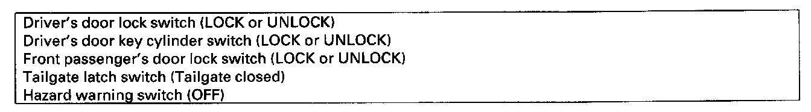
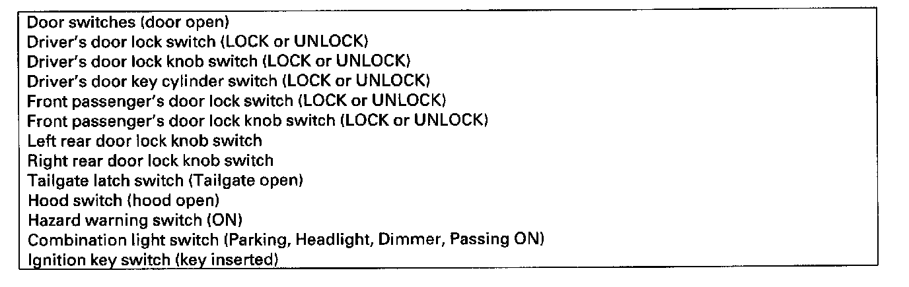

Sleep and Wake-Up Mode Test
Sleep and Wake-up Mode Test
1. Shift to the sleep mode:
Turn the ignition switch OFF, and remove the key, then open and close the driver's door. If the MICU receives no signals from the inputs listed below, it will go into sleep mode in less than 40 seconds.
2. Confirm the sleep mode:
Measure the voltage on the B-CAN communication line (PNK wires); there should be battery voltage in the sleep mode. Check the parasitic draw at the battery while shifting into the sleep mode; amperage should change from about 200 mA to less than 35 mA.

3. Shift to the wake up mode:
When the ignition switch is turned ON (II), the MICU, gauge control module, immobilizer-keyless control unit-receiver, and PCM wake up at the same time without "talking" to each other through the communication lines. When any switch in the multiplex integrated control system is turned on, it wakes up its related control unit which, in turn, wakes up the other units. After confirming the sleep mode, look in the given table for the switch most related to the problem. Operate that switch and see if its control unit wakes up.
NOTE: If any control unit is faulty and will not wake up, several circuits in the system will malfunction at the same time. In the table below, the control unit is followed by a list of the switches and input signals that can wake it up.